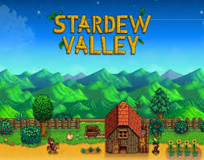

Stardew Valley is an open-ended country-life RPG!
조자 주식회사에서 고단한 회사 생활을 하던 주인공은 어느 날 어릴 적 할아버지가 삶이 힘들고 지칠 때 열어보라는 편지를 뜯어보게 된다. 편지에는 할아버지가 과거 살던 농장에서 새 삶을 시작하라는 내용이 적혀있었고, 주인공은 한적한 지역인 스타듀 밸리의 펠리컨 마을로 이사를 오게 된다.
목장이야기 시리즈에서 영감을 받아 4년 동안 만들어진 1인 개발 인디 게임. 보통 1인 인디 게임이라도 음악이나 그래픽 등은 여력이 안 되어서 다른 개발자에게 도움을 받거나 돈이 좀 있다면 외주를 맡기는 경우가 많은데 이 게임은 독특하게도 개발자가 혼자서 모든 것을 다 만들었다. 또한 게임 자체의 최적화율도 매우 좋아 사양을 많이 잡아먹지 않기 때문에 웬만한 컴퓨터에선 원활한 실행이 가능하다. 만약 이 게임이 실행되지 않는다면 대부분 프로그램 등이 충족되지 않은 경우. 발매 직후엔 거의 2~3일당 하나씩 패치 몇 개를 뽑아내는 꾸준한 관리와 함께 훌륭한 게임성으로 호평을 받았다. 스팀 판매 순위에서도 상위권을 차지했다. 출시 12일만에 42만 5천카피가 판매되었고, 주간 판매량에서는 더 디비전에 이어 2위에 오르기도 했다. 심지어 국내에서도 기사화되기도 했다!